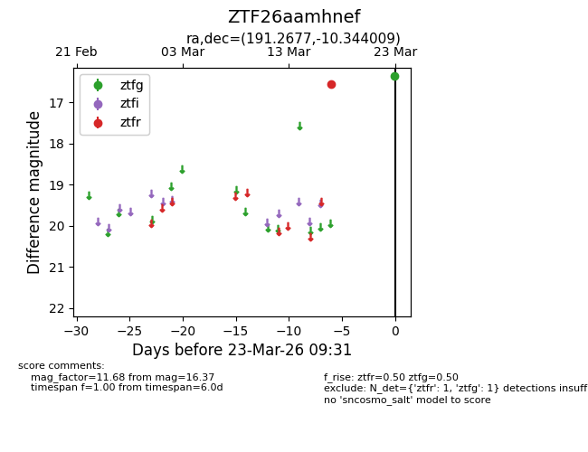
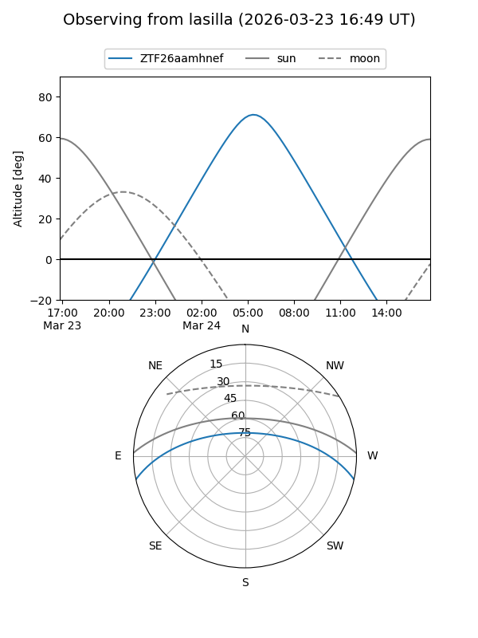
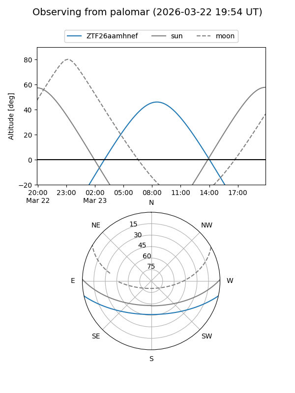

ZTF26aamhnef
Target ZTF26aamhnef at 2026-03-23 09:33
Aliases and brokers:
FINK: link
Lasair: link
ALeRCE: link
alt names
ZTF26aamhnef (ztf,fink_ztf)
Coordinates:
equatorial (ra, dec) = 191.2677,-10.34401
equatorial (HMS+DMS) = 12:45:04.25,-10:20:38.43
galactic (l, b) = (300.3594,+52.49593)
Flags:
Photometry:
last ztfg=16.37, ztfr=16.55
1 ztfg, 1 ztfr detections
Lightcurve

Visibility


Additional plots